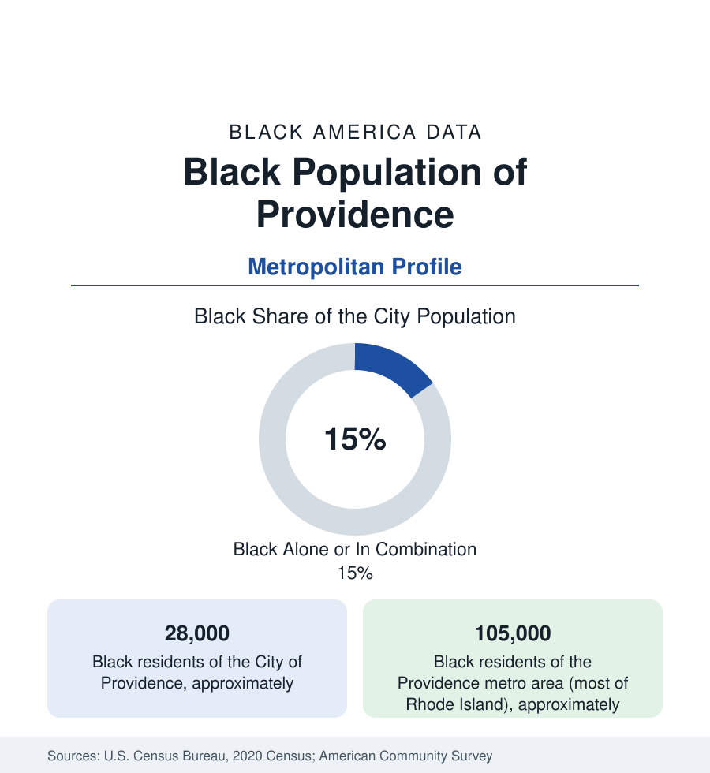

Black Cities
Black Providence: Fox Point, the Cape Verdeans, and Rhode Island's Capital
Providence holds about 28,000 Black residents in the city and 105,000 across Rhode Island — home to America's Cape Verdean heartland. The census profile.

Providence holds about 28,000 Black residents within the city — Black alone or in combination, roughly a seventh of its 191,000 people — and about 105,000 across a metropolitan area that is effectively Rhode Island itself. Black Providence runs on two deep tracks: one of the urban North's oldest African American communities, with a Black institutional record reaching to the 1700s — and the American heartland of Cape Verdean immigration, the Atlantic island diaspora that made this corner of New England bilingual in Kriolu and unlike anywhere else in the data.
Fox Point, Lippitt Hill, and the East Side Line
The community's historic ground is the East Side's edge and the neighborhoods renewal moved it from: Fox Point — the port district where Cape Verdean sailors and packet-ship crews settled from the nineteenth century, its India Street the diaspora's American main street — and Lippitt Hill and Mount Hope, the African American districts beside Brown University's hill, substantially cleared and redeveloped across the renewal era (the university's expansion and the highway's cut both take their acreage from these streets in the city records). The modern map centers south and west: South Providence's Broad Street corridor (now the city's Latino commercial heart as well, the neighborhoods layering), Upper South Providence and Elmwood, Mount Pleasant and Hartford's Providence edge, and the small cities beyond — Pawtucket and Central Falls at the metro's north (Central Falls, the state's densest and most diverse square mile), Cranston and East Providence's shared streets. The Cape Verdean geography extends past the metro into southeastern Massachusetts — New Bedford and Brockton hold the diaspora's other poles — making the Providence file properly a regional one.
Hospitals, Universities, and the Old Port Economy
Providence's Black workforce follows the eds-and-meds capital pattern at small scale: the hospital systems (Lifespan's Rhode Island Hospital complex, Care New England — the city's largest employers), the universities (Brown, RISD, Johnson & Wales, Providence College, Rhode Island College — the academic layer of College Hill and its service economy), state government, the jewelry industry's descendant manufacturing (Providence was America's costume-jewelry capital; its factory workforce was a Black and immigrant file for a century), and the service economy of the revived downtown and waterfront. The indicators record a small-city version of the section's split: Black Providence's incomes below the Rhode Island median by the standard margin, poverty concentrated in the south-side districts, homeownership rooted in Mount Pleasant, Elmwood, and the Pawtucket streets — with the gentrification file of the East Side (Fox Point's cottages now priced by the College Hill market) as the displacement edge the housing data track.
The Cape Verdean Heartland
The diaspora data are the profile's signature: Rhode Island and southeastern Massachusetts together hold the largest Cape Verdean population outside the islands themselves in the standard estimates — a community arrived by whaling ship and packet steamer (the Fox Point wharves), grown by the post-1975 independence migration, and institutionally complete: the Kriolu-language parishes and social clubs, the morna and funaná music economy, the Cape Verdean Museum in Pawtucket (the diaspora's first), the consulate, and a political representation line (the state and city's Cape Verdean elected officials) unmatched elsewhere in America. The census's categories hold the community imperfectly — many Cape Verdeans identify across the Black, multiracial, and Portuguese-speaking boxes by generation and by island — and the demographers' special studies of the diaspora are the file's necessary supplement. The African American layer is older still: Providence's free Black community of the 1700s, the African Meeting House tradition, Oberlin's and Brown's abolition-era records (Brown's own slavery-history commission made the university's file a national model of institutional accounting), and the Hardscrabble riots' record marking the community's earliest measured resistance.
Change and the Estimates
The estimates show Rhode Island's Black population growing on the diaspora and newer African and Caribbean streams — the metro's count rising even as the city's overall growth stays modest — with Central Falls and Pawtucket's diversity deepening and the south-side corridors' reinvestment (the Broad Street and hospital-district files) testing the displacement arithmetic. The school's data (Providence's public schools — majority Latino with a substantial Black enrollment, under a state intervention whose reports are the city's education file) carry the community's next generation in one of the country's most-watched receiverships.
Reading the Providence Numbers
Providence is the diaspora-capital profile: 28,000 people in a small capital where the Black population is also an island nation's American center — the wharf where the packet ships landed still in the data two centuries on. Small numbers, oceanic depth: the census counts a city; the file holds an archipelago.
More in Black Cities
Black Atlanta: Population, Distribution, and Growth of a Black Metropolis
Metro Atlanta holds more than two million Black residents — roughly one in three, second only to New York. The suburban distribution, migration history, and composition of Black Atlanta in the census data.
Black New York: The Largest Black Population in America
The New York metropolitan area holds about 3.4 million Black residents — more than any metro in the nation — and the city itself about two million. The census profile.
Black Washington: The District and the Metro
The Washington metro holds about 1.6 million Black residents, and the District itself — long a majority-Black city — now records a Black share near 41 percent. The census profile.
Source: U.S. Census Bureau, 2020 Census; American Community Survey; Population Estimates Program.